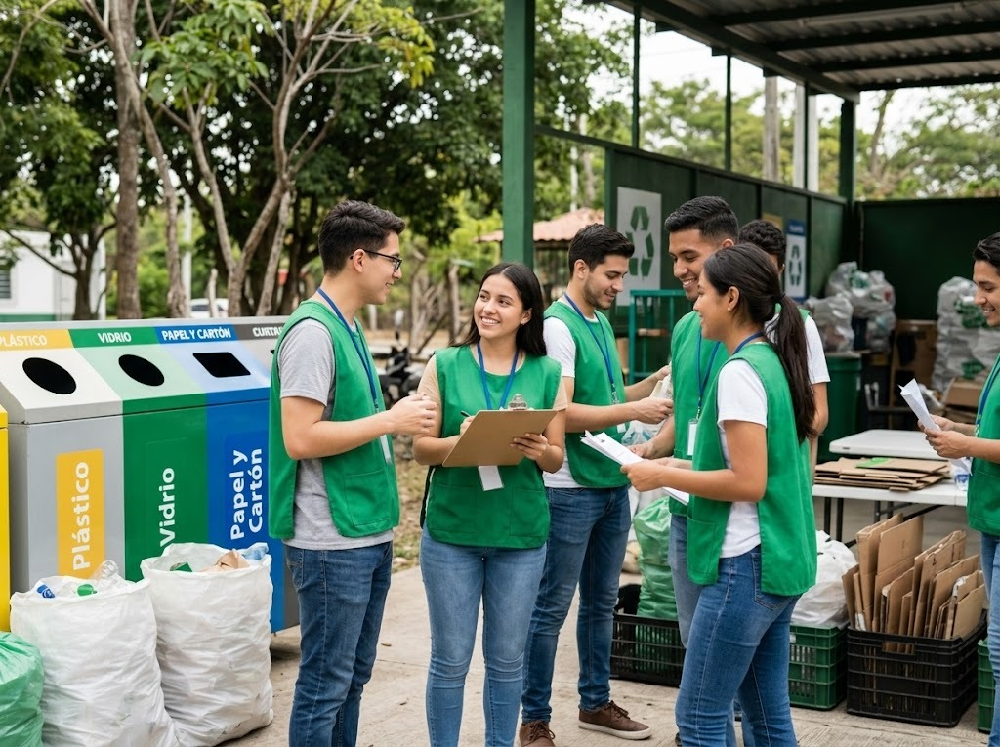
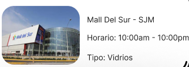
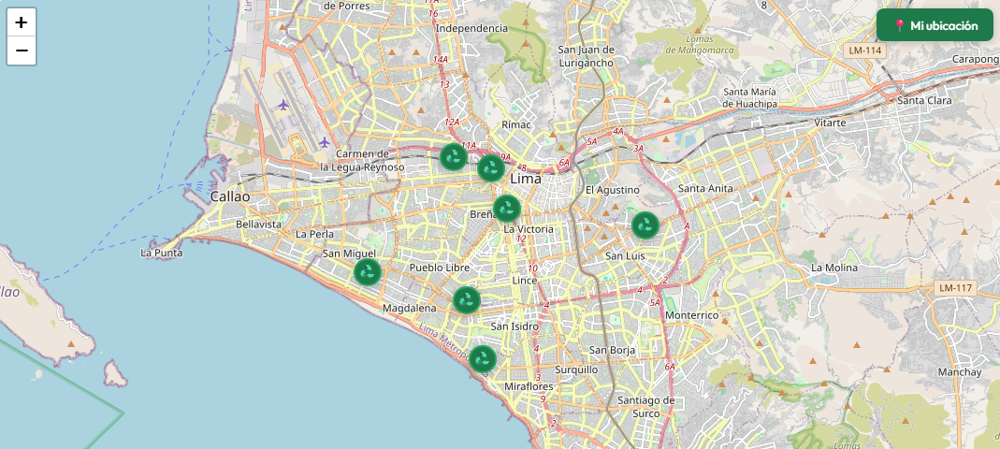
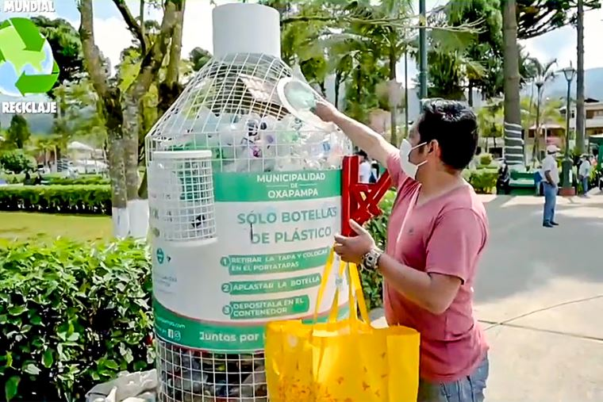
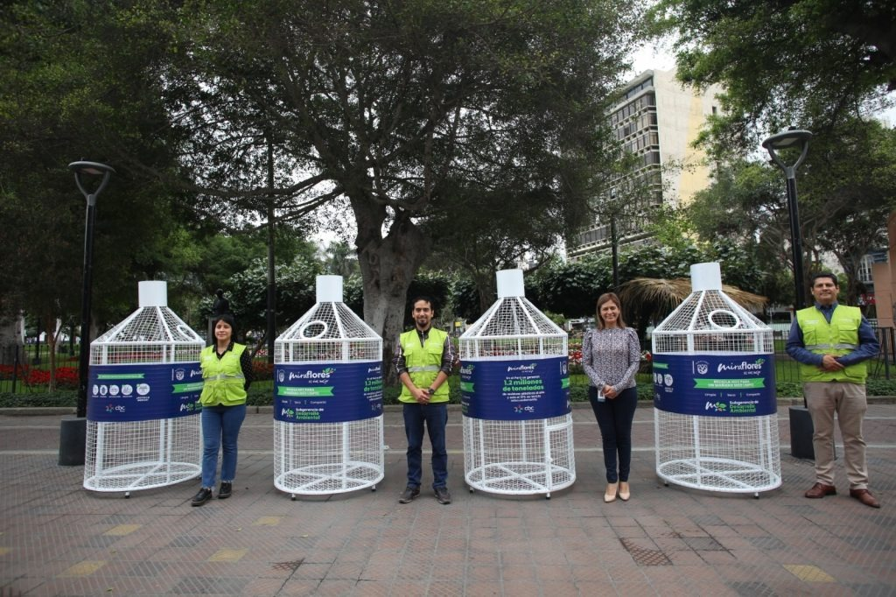

EcoPunto Central - Parque Zonal
Dirección: Av. Los Héroes 123
Horario: Lun - Sáb: 8:00 am - 6:00 pm
Plástico
Vidrio
Papel / Cartón
Facilitamos a la ciudadania la ubicacion de contenedores, puntos de acopio y centros de reciclaje

Somos una organización que promueve iniciativas relacionadas con el objetivo de desarrollo sostenible asignado a nuestro equipo.
Reducir la generacion de desechos mediante la prevencion, reduccion, reciclado y reutlizacion accesible para todos.
Convertirnos en la red digital de referencia nacional para el reciclaje y la gestion responsable de residuos.
Aún no has guardado ningún centro de acopio recurrente.

Ofrecemos soluciones accesibles para la gestión responsable de residuos y el reciclaje.
Selecciona un tipo de residuo para ver los contenedores disponibles:
No hay contenedores registrados para el filtro seleccionado.
Dirección: Av. Los Héroes 123
Horario: Lun - Sáb: 8:00 am - 6:00 pm
Dirección: Calle Comercio 450
Horario: Lun - Vie: 9:00 am - 5:00 pm
Dirección: Jr. Las Flores 789
Horario: Mar - Dom: 7:00 am - 1:00 pm
Dirección: Av. Primavera 1020
Horario: Abierto 24 horas
Dirección: Plaza Principal s/n
Horario: Lun - Sáb: 8:30 am - 5:30 pm

Impulsamos iniciativas sostenibles para trasformar la gestion de residuos en la comunidad.
Conoce nuestras jornadas comunitarias de recolección, capacitaciones vecinales y el impacto del trabajo colaborativo por un entorno más limpio.


Experiencia de vecinos y recicladores que ya forman parte de la red EcoPunto.
"Gracias al mapa de Ecopunto encontre un contenedor de RAEE cerca a mi casa para reciclar mi artefactos en desuso."
"La opcion de guardar mis puntos favoritos me ayudan a organizar semanalmente para llevar el plastico y carton"
Si tienes dudas sobre nuestros servicios o deseas colaborar con nosotros, no dudes en enviarnos un mensaje.
¿Conoces algun otro centro de acopio? Envianos los detalles mediante el siguiente formulario: